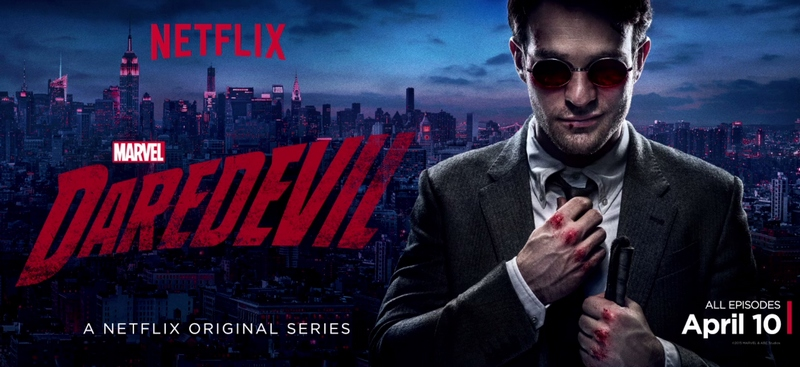

von Stefanie Zurek

Daredevil (© Netflix)
(sz) – Das Bangen für Comic-Fans weltweit hat ein Ende. Endlich gibt es eine gute, wirklich gute Adaption des Marvel-Superhelden Daredevil. Das Stiefkind der Comicverfilmungen ist aus der Asche auferstanden wie ein Phönix. Bis vor ein paar Jahren war das noch undenkbar erschienen, hatte Twentieth Century Fox die Figur 2003 in der Filmadaption mit Ben Affleck doch so völlig verbrannt, dass die Adaption noch heute allgemein als einer der schlechtesten Comicfilme überhaupt gilt. (An dieser Stelle sei allerdings erwähnt, dass der gut 30 Minuten längere Director’s Cut viele Fehler des Films ausbügelt und mit FSK 16 auch direkt höher eingestuft wurde.)
Dabei ist Matt Murdock eine der interessantesten und ambivalentesten Helden im Marvel-Universum. Denn nirgendwo wird der Aspekt der Selbstjustiz, der fast immer eine Komponente bei Superhelden ist, so offen diskutiert. Immerhin ist Matt Murdock im »echten« Leben Anwalt, und macht nachts Jagd auf die Schurken, die ihm tagsüber in dem korrupten System durch die Lappen gegangen sind. Um dem ganzen noch die Krone aufzusetzen, ist Matt blind – so, wie auch Justitia blind ist.
Wie die meisten Geschichten ist auch die von Daredevil relativ schnell erzählt: Als Kind verliert Matt Murdock, der mit seinem Vater in Hell’s Kitchen in New York aufwächst, bei einem Unfall durch chemische Säuren (in den ersten Comics durch radioaktives Material) sein Augenlicht. Fortan ist er zwar blind, doch seine anderen Sinne extrem geschärft. So sehr, dass er sich im Prinzip wie ein Sehender durch die Welt bewegen kann, und seinen Blindenstock in erster Linie nutzt, um nicht weiter aufzufallen.
Matts Vater, ein Preisboxer, lässt sich auf dubiose Machenschaften ein und wird erschossen, als er sich weigert, einen Boxwettkampf absichtlich zu verlieren. Danach trifft Matt auf den in Comics fast obligatorischen Mentor, der ihn in die Kunst der Martial Arts einweiht und ihm hilft, mit seinen Sinnen umzugehen. Matt geht aufs College, studiert Jura und trifft dort auf Franklin »Foggy« Nelson. Die beiden werden zu besten Freunden und eröffnen in Hell’s Kitchen eine Kanzlei, in der sie den Armen und Schwachen helfen. Nachts hingegen zieht Matt als Daredevil durch die Straßen von New York, um gegen das Böse zu kämpfen. Soweit die Vorgeschichte und Handlung der Comics und seinen Adaptionen.
Die Straßen von Hell’s Kitchen
Als Daredevil 1964 zum ersten Mal in den Läden erschien, war Hell’s Kitchen - der Teil Manhattans, in dem Matt Murdock als Rächer agiert - noch eine arme und heruntergekommene Nachbarschaft, in der die irische Mafia, die »Westies«, ihr Unheil trieben. Entsprechend düster waren auch die Daredevil-Comics. Matt Murdocks Erzfeind ist Wilson Fisk, schlicht »Kingpin« genannt, der lokale Verbrecherboss. Die Polizei ist geschmiert, das Justizsystem korrupt, der Kingpin hat überall seine Finger im Spiel. Unmöglich scheint man ihm mit legalen Mitteln beizukommen, also versucht Matt Murdock es aus Verzweiflung mit illegalen Mitteln. Als Rächer »Daredevil«, der Draufgänger, der Mann ohne Angst.
Als Mann irischer Abstammung ist Matt Murdock natürlich katholisch erzogen worden, und so dreht sich in den Comics auch immer wieder alles um Gut und Böse und darum, welcher Zweck die Mittel heilt. Dass Daredevil in seinem Namen den Teufel trägt, wo er doch in Hell’s Kitchen agiert, ist sicherlich kein Zufall. Die religiöse Komponente ist Bestandteil des Dardevil-Universums.
Die 2003er Filmadaption bemühte sich zwar, diese düstere Grundstimmung auf die Leinwand zu transportieren, scheiterte aber nicht zuletzt an der FSK 12-Freigabe. Entsprechend nervös wurde die angekündigte und von Netflix produzierte 13-teilige Serie erwartet, vor allem, als feststand, dass man den Briten Charlie Cox als Matt Murdock gecastet hatte. Tristan aus Stardust (Sternenwanderer) sollte den charismatischen Racheengel aus Hell’s Kitchen geben? Es schien unmöglich.
Doch Netflix, das kann nun getrost gesagt werden, bewies ein ausgesprochenes Händchen (und auch ein wenig Mut) beim Casting. Hollywood-Veteran Elden Henson gibt einen fantastischen Foggy, und auch die Figuren der Karen Page und Claire Temple sind mit Deborah Ann Woll und Rosario Dawson hervorragend besetzt. Nicht zu vergessen natürlich Vincent D’Onofrio, dessen einfühlsame und vielschichtige Interpretation des Kingpin allein das Ansehen wert ist.
Die wilden 70er
Netflix vollbrachte ein Wunder. Das, womit kaum noch jemand gerechnet hatte. In nur 13 Folgen re-etablierte Netflix Daredevil als einen der interessantesten und authentischsten Superhelden. Mit allgemeiner Begeisterung wurde die Serie vom Publikum aufgenommen, eine zweite Staffel kurz nach der Ausstrahlung der ersten bestätigt.
Schon früh hatte Netflix verlauten lassen, man wolle Daredevil im Stil einer 1970er Krimiserie angehen. Die Einflüsse sind bei der Serie tatsächlich deutlich zu spüren und erweisen sich als Geniestreich. Denn das Hell’s Kitchen des Jahre 2015 scheint tatsächlich irgendwo in den 1970ern hängen geblieben zu sein. Zwar benutzen alle Figuren Handys und fahren neue Autos, doch die Häuser sind immer noch heruntergekommen, die Büroausstattung vorsintflutlich und Recherche betreibt man sogar hin und wieder ganz klassisch, in dem man sich durch Papierakten wühlt. Sogar die Gewaltdarstellungen erinnern irgendwo an Filme aus der Dekade, denn sie sind zwar äußerst brutal, doch hält die Kamera nie explizit auf das Geschehen drauf. Voyeurismus sucht man vergebens. Die Fantasie des Zuschauers macht den Rest, wenn der Kingpin auf brutalste Weise einen Konkurrenten aus dem Weg räumt.
Daredevil ist eine erwachsene Superhelden-Serie. Langsam erzählt und auf Figurenentwicklung bedacht, schön gefilmt und in Szene gesetzt und durchzogen von der Angst, in einer Gesellschaft zu leben, die gegen ihre Unterdrücker nichts ausrichten kann. Denn Wilson Fisk, der Kingpin, ist kein Superschurke mit übermenschlichen Kräften, sondern bloß ein Mensch, der in dem Glauben, das Beste für seine Stadt zu tun, buchstäblich über Leichen geht. Mehrere Male werden die Parallelen zwischen Matt Murdock und Wilson Fisk gezogen und wiederholt die Frage gestellt, wann der Zweck die Mittel heiligt. (Interessant ist in diesem Zug der Comic-Sechsteiler End of Days aus dem Jahr 2012, in der Matt Murdock tatsächlich Wilson Fisk tötet und zum nächsten Kingpin von Hell’s Kitchen wird.) Denn gerade in der Netflix-Verfilmung ist Wilson Fisk ein fast stiller, in sich gekehrter Mann, der mit seinen eigenen Dämonen zu kämpfen hat und es kaum über sich bringt, eine Beziehung mit einer Frau einzugehen. Er ist, trotz aller Gräueltaten, sehr menschlich.
Zwar wartet Daredevil immer wieder mit brillant choreografierten und gefilmten Kampfszenen auf, doch in seiner fast stillen Adaption unterscheidet sich Netflix‘ Daredevil wohltuend von den bombastischen CGI-Schlachten der letzten Filme aus dem Marvel Cinematic Universe. Keine Außerirdischen, keine bösartigen Roboter, keine blinkenden Apparate oder Hologramme. Daredevil ist bloß ein Mann, der versucht, seine Stadt vor dem Untergang zu retten, selbst, wenn es ihn fast das Leben kostet.
Am schönsten ist jedoch, dass Netflix es geschafft hat, das Herzstück der Comicreihe perfekt für den Bildschirm umzusetzen: die Freundschaft zwischen Matt und Foggy. Dass die beiden wie Brüder zueinander stehen und alles füreinander tun würden, wird in der Serie immer wieder deutlich. Und auch Foggy und Karen sind nicht bloß schmuckes Beiwerk, sondern voll ausgearbeitete Figuren, die in der korrupten Welt des Marvel-Hell’s Kitchen versuchen, den Leuten zu helfen ohne dabei selbst ihre Seele aufs Spiel zu setzen.
Letzten Endes geht es für alle Figuren in Netflix‘ Daredevil genau darum: Bei dem Versuch, gegen die Machenschaften des organisierten Verbrechens anzugehen, sich nicht selbst zu verlieren. Nicht wenige Figuren müssen im Verlauf der Serie ihre Grenzen überschreiten und mit dem klarkommen, was ihnen widerfahren ist und was sie getan haben. Es sind diese Erzählweise und dieser Fokus auf die Figuren, die Daredevil absolut sehenswert und die Figur wieder salonfähig machen.
Und vor allem zu einer Adaption, die dieser fantastischen Figur gerecht wird.